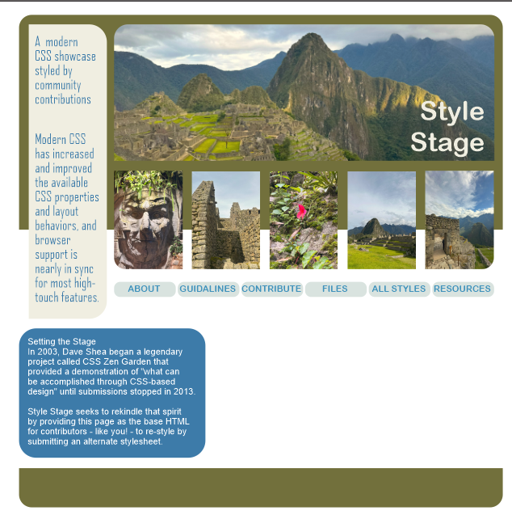
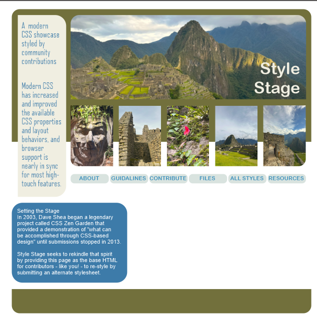

Group Members
- Valerie Sanchez
- Abel Chavez
Theme: Modern Meets Machu Picchu
We're keeping it simple—but it will still be impactante. Our inspiration? The ancient beauty of Machu Picchu blended with a clean, modern tech style. It's a contrast that works: grounded, natural textures paired with smooth, minimalist design.
How We're Incorporating the Theme
Typography:
We’re using Instrument Sans to keep the look clean and modern. We might also bring in a subtle accent font inspired by Incan or Peruvian design, just to nod to our roots—but without overwhelming the design.
Color Palette:
We’ll mix natural earthy tones (stone gray, moss green, sunrise orange) with modern neutrals and sharp contrasts. Think: a muted palette with a few bold accents. It's grounded, but it stands out.
Layout and Composition:
The layout will be simple, clean, and responsive—thanks to Flexbox and CSS Grid. We’re aiming for breathing space and a layout that feels calm, not crowded. Just like walking through an ancient path: everything has its place.
UI Elements:
Buttons and nav elements will have a smooth, rounded design with modern touches—minimal shadows, elegant hover effects. Maybe even a stone-texture background or subtle natural pattern in certain sections.
Animations and Transitions:
We'll keep things subtle but elegant—hover transitions, slow fades, maybe a parallax scroll effect. Nothing flashy. Just enough to feel alive and intentional.
Overall Aesthetic:
We’re aiming for a design that feels timeless and modern at the same time. Clean, minimal, but with deep roots. Like standing in Machu Picchu with a tablet in your hand—it’s old meets new, and it works.
Conclusion
Our style is simple but powerful. By blending a modern layout with the timeless inspiration of Machu Picchu, we want users to feel grounded but inspired. Using CUBE CSS helps us keep everything structured and maintainable, while the design speaks for itself—clear, calm, and a little bit impactante.
Wireframe Examples
 
